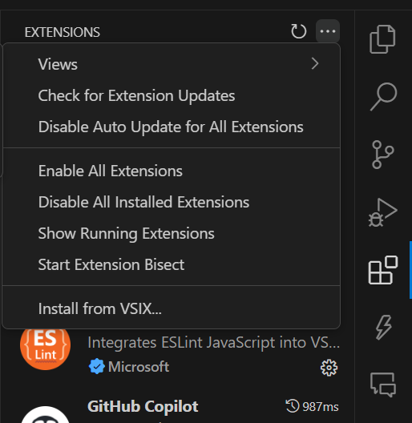
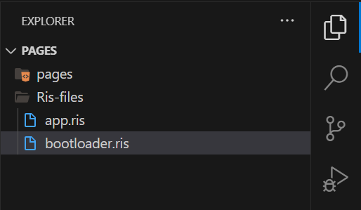

Reverse Instruction Set Documentation
This documentation provides a comprehensive guide to the Reverse Instruction Set, an assembly-like language designed to facilitate operating system development in Visual Studio Code.
Getting Started
To begin using the Reverse Instruction Set, follow these steps:
- Install Visual Studio Code.
- Download the Reverse Instruction Set extension from our Github
- After downloading, go to the extension marketplace in Visual Studio Code and install from .VSIX. 
- Start coding your first OS component, create a file with
.ris


Building Your First OS
Finish setting up? Ready to build your first Operating System? Let's go!
1. The structure of a basic Operating System in reverse-instruction-set:
/ (Root Directory)
├── bin/ (Essential User Binaries)
│ ├── ls, cp, mv, rm (Basic commands)
│ ├── bash, sh (Shell programs)
│ └── cat, grep, sed (Text utilities)
│
├── sbin/ (System Binaries)
│ ├── init (System initialization)
│ ├── mount, umount (File system utilities)
│ └── iptables, ifconfig (Network administration)
│
├── etc/ (Configuration Files)
│ ├── passwd (User account info)
│ ├── fstab (File system table)
│ ├── hosts (Network host mapping)
│ └── init.d/ (Service startup scripts)
│
├── lib/ (Shared Libraries)
│ ├── libc.so (C standard library)
│ ├── ld-.so (Dynamic linker)
│ └── modules/ (Kernel modules)
│ └── drivers/ (Device drivers)
│
├── usr/ (User Programs & Data)
│ ├── bin/ (User applications)
│ ├── lib/ (Application libraries)
│ ├── share/ (Shared data files)
│ └── src/ (Source code)
│ └── / (Kernel source)
│
├── var/ (Variable Data)
│ ├── log/ (System logs)
│ ├── tmp/ (Temporary files)
│ ├── spool/ (Print/mail queues)
│ └── run/ (Runtime data)
│
├── home/ (User Home Directories)
│ ├── user1/
│ ├── user2/
│ └── admin/
│
├── root/ (Root User Home)
│
├── tmp/ (Temporary Files)
│
├── dev/ (Device Files)
│ ├── sda, sdb (Storage devices)
│ ├── tty0, tty1 (Terminal devices)
│ ├── null, zero (Special devices)
│ └── random, urandom (Random number generators)
│
├── proc/ (Process Information - Virtual FS)
│ ├── cpuinfo (CPU information)
│ ├── meminfo (Memory information)
│ ├── 1234/ (Process ID directories)
│ └── sys/ (Kernel parameters)
│
├── sys/ (System Information - Virtual FS)
│ ├── class/ (Device classes)
│ ├── devices/ (Device hierarchy)
│ └── kernel/ (Kernel information)
│
├── mnt/ (Mount Points)
│ ├── cdrom/
│ ├── usb/
│ └── network/
│
├── media/ (Removable Media)
│ ├── usb0/
│ └── cdrom0/
│
└── boot/ (Boot Files)
├── vmlinuz (Kernel image)
├── initrd.img (Initial RAM disk)
└── grub/ (Boot loader config)
2. The basic syntax of reverse-instruction-set:
Comments: Lines starting with ; are treated as comments.; This is a commentInstructions: Recognized instructions (keywords) include PRN, VAR, and HLT. These are highlighted as control keywords.PRN VAR HLTVariables: Variables are referenced using ${variableName} syntax.${myVariable}Strings: Double-quoted text is treated as a string."Hello World!"Labels: Labels are identifiers at the start of a line followed by a colon.start: loop1:Operators: The operators>>, <<, and =are recognized.
3. Snippets in reverse-instruction-set:
Print Statement (prn):
Inserts PRN ${message} >> to print a message to the console.
Variable Declaration (var):
Inserts VAR ${name} = ${value} to declare a variable.
Input Variable (input):
Inserts VAR ${name} = << ${prompt} to declare a variable and assign user input.
Halt Program (hlt):
Inserts HLT to halt program execution.
Hello World Program (hello):
Inserts a simple "Hello, World!" RIS program with print and halt.
User Input Program (greet):
Inserts a program that welcomes the user, asks for their name, greets them, and halts.
Pre-Built Components
Explore our library of pre-built components that you can integrate into your OS projects.
We don't have much cause there are no users right now, Be the
First
A simple kernel
Prints a startup message. Asks for a username and greets the user. Prompts for a command and echoes it back. Prints a shutdown message and halts.
; Simple RIS Kernel Example
PRN RIS Kernel started. >>
VAR user = << Enter your username:
PRN Welcome, ${user}! >>
VAR cmd = << Enter a command:
PRN You entered: ${cmd} >>
PRN Shutting down kernel... >>
HLT
A Simple bootloader
; Simple RIS Bootloader Example
PRN Bootloader starting... >>
; Initialize variables (if needed)
VAR boot_status = 1
; Simulate loading the kernel
PRN Loading kernel... >>
VAR kernel_loaded = 1
; Boot complete
PRN Boot complete! >>
HLT
Common Errors
No errors reported. First
FAQs
No questions asked. First